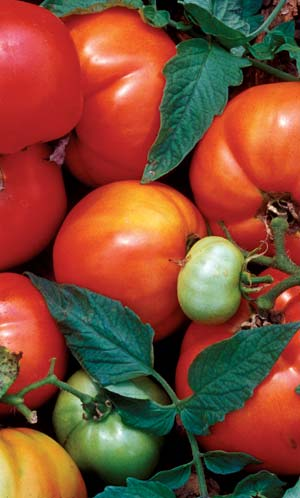
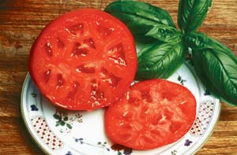
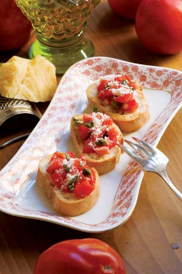
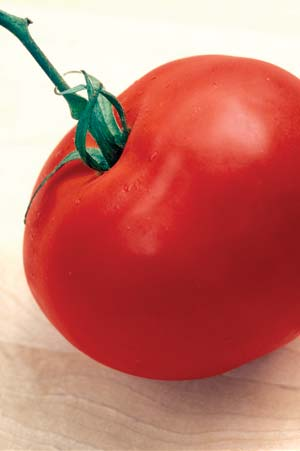

Every year I am asked to name my favorite tomato. My honest response - I don’t have one; I enjoy variety. Yet I think it’s fair to say that of all the “big reds” (as I call them), ‘Abraham Lincoln’ consistently ranks at the top. It is one of those heirloom varieties that faithfully produces huge crops of extra large, meaty fruit, and resists foliage diseases, making it ideal for organic growers like me. On top of that, it has a real summery tomato flavor that is largely missing in modern hybrids. I also like the fact that it produces heavily right up to the first killing frost and keeps me in pre-ripened green tomatoes for jams and chutneys all the way to Christmas. And on a sultry August day, there is nothing like a chilled glass of white wine and a light bruschetta made with fresh ‘Abraham Lincoln’ tomatoes.
‘Abraham Lincoln’ was introduced in 1923 by the W. H. Buckbee seed company of Rockford, Ill., which named the tomato in honor of the state’s favorite son. It was released without much fanfare, but over the years it has proved itself to be one of the great tomato classics that happily survived the big shift to hybrids during the 1940s. After the demise of the Buckbee firm, the tomato was continued by R. H. Shumway of Randolph, Wis.
Looking back on the tomato situation in the 1920s, there were a lot of other big reds competing for culinary attention: ‘John Baer,’ ‘Bonny Best,’ ‘Landreth’ and ‘Henderson’s Winsall’ (developed in 1924 in response to ‘Abraham Lincoln’), yet most of those are selections of one another and when placed side by side, it’s pretty difficult to tell them apart. ‘Abraham Lincoln’ stands out, perhaps because of its dark red color and bronzy-green leaves. Buckbee claimed that the average fruit weighed about a pound; I would say it’s closer to 8 ounces, though some fruits occasionally do get that large. You tend to get smaller fruits if you allow them to develop in clusters from six to nine tomatoes, and larger specimens if you pull off the small ones.
Today, there are two strains of ‘Abraham Lincoln.’ The original 1923 strain is considered a late-season tomato, maturing in 87 to 90 days. Because I plant tomatoes outdoors in mid-April, this means I will have harvest-ready tomatoes by mid-July or early August at the latest. Another strain of ‘Abraham Lincoln,’ which is offered by Southern Exposure Seed Exchange, was introduced around 1975 as a more mid-season tomato that matures about two weeks earlier. This strain does not have the distinctive bronzy green leaves of the original, but it is identical in all other respects, even the same flavorful dark red fruit.
Rather than oblate (a flattened sphere) in shape like common beefsteak tomatoes, ‘Abraham Lincoln’ is round, solid and firm, which is why it’s such a good slicer. And unlike some heirlooms, ‘Abe Lincoln’ can tolerate rainy weather without splitting. In my garden, where I have a problem with tiny ants, splitting is an important issue because as soon as cracks develop on any of my tomatoes, the ants appear and the invaded fruit is quickly ruined. Last year, ‘Abe Lincoln’ won the war against the ants, so I didn’t have to resort to any remedial treatments (a real plus for organic gardeners).
Growing ‘Abraham Lincoln’ from seed is quite easy. Just start the seeds in potting soil in mid- to late February. If you start your tomatoes too soon in the winter, the plants will become tall and leggy before they are ready to transplant outside, which will only set them back. If you don’t have a greenhouse, a sunny windowsill will do. Once the seed has germinated and plants are forming their second or third leaves, separate the seedlings and plant in individual pots or in trays.
After the threat of frost has passed and the ground is warm, transplant the tomatoes to the garden. If you want to save seeds, be sure your tomato plants are at least 25 to 30 feet away from any others, or you may get crossing. Plant them 8 to 12 inches apart and allow plenty of room for caging or stakes.
‘Abraham Lincoln’ produces an abundance of fruit, so it requires a lot of support. If you let it run over the ground you are more likely to have damaged fruit from slugs, insects and a whole list of critters that like tomatoes as much as we do. I use square tomato cages and plant one vine inside each corner. As the plants grow, I tie them to the cage with twist ties or string so they don’t sag or slide down from the weight of the fruit.
I also prune my plants so there are no leaves for at least 10 inches above the ground. This discourages insects from climbing up the plants and allows air to circulate through the vines. (Circulating air discourages mildews, leaf blights and fungal problems that can develop quickly on tomatoes during humid weather.)
As I mentioned earlier, if you want large fruit, pick the smaller ones in each cluster. Those little green tomatoes are wonderful for pickling and in chutneys and jams, so don’t waste them. You can tell when the ripe fruit is ready to pick by the dark red color and the soft feel of the fruit. The more you pick, the more ‘Abe Lincoln’ produces. No matter what your seed packets may claim, the appearance of mature fruit depends a lot on the weather: Cool evenings and excessive rain will hold them back, and severe drought conditions can cause the flowers to drop so there may not be any fruit at all. I would just take maturing times as averages, keeping in mind that tomatoes are heavy feeders, so good, rich soil will correct many deficiencies.
To save seeds, scoop out the seed mass of fully ripe fruit (selecting seeds from only the very best specimens), and put it in a jar of water. Label it with the name and date. Allow about four to five days of fermentation, then pour off the smelly scum that develops on the top. The good seed will sink to the bottom. Rinse the seed thoroughly in a tea strainer, then dry on paper towels. Label and date the seed clearly. Once it has dried for two or three weeks (depending on the humidity and weather), put the seed into envelopes and seal in airtight jars. Store the seed in a dark, dry, cool place. Your seed will be good for as long as 10 years if stored this way. I’ve had some seed last as long as 15 years, but it’s a good idea to refresh your seed stock every few years as a hedge against unforeseen accidents or a problematic growing season.
The secret to good Italian bruschetta is well-toasted, hearty country bread and first rate olive oil, as virgin and as thick as you can find. Of course, one more important ingredient is the tomato, and flavorful ‘Abraham Lincoln’ fits the bill. Aside from toasting the bread, no cooking is involved.
12 slices of whole-wheat bread, about 11⁄2 inches thick
4 cloves garlic
1⁄2 cup virgin olive oil
2 cups red tomatoes, coarsely chopped
1 tbsp capers
1 tbsp sweet basil (or more to taste), chopped
2 tbsp fresh lemon juice
Salt and pepper to taste
Parmesan cheese, grated
Make your bread slices small enough to hold easily in your hand, about 3 to 4 inches wide, and toast them golden brown on both sides. Mince the garlic very fine or force it through a garlic press, then combine it with the olive oil in a work bowl. Add the tomatoes, capers, sweet basil, lemon juice and seasonings. Spread the mixture on the toasted bread and sprinkle Parmesan cheese over the top. Serve immediately.
Reimer Seeds; Mount Holly, N.C.
R. H. Shumway; Randolph, Wis.
Southern Exposure Seed Exchange; Mineral, Va.
Swallowtail Garden Seeds; Santa Rosa, Calif.
Tomato Growers Supply Co.; Fort Myers, Fla.
Victory Seed Company; Molalla, Ore.
Heirloom Vegetable Gardening: A Master Gardener’s Guide to Planting, Seed Saving and Cultural History by William Woys Weaver, now on CD. If you want to explore the fabulous flavors, fascinating history and amazing diversity of vegetables, this is the book to start with. Food historian and Mother Earth contributing editor Will Weaver profiles 280 heirloom varieties, with authoritative growing advice and incredible recipes. First published in 1997, Heirloom Vegetable Gardening has since been out of print, with used copies selling online for as much as $300. We are proud to present the original text, with color photos, as a digital book on CD-ROM. Order now.
|
 DAVID CAVAGNARO ‘Abraham Lincoln’ tops the list of “big red” tomatoes for flavor, appearance, production, and pest and disease resistance. |
 JUDY WHITE/GARDENPHOTOS.COM If you’re looking for the perfect slicing tomato, trust the ‘Abe Lincoln’ variety. |
 ROB CARDILLO On a hot summer evening, there’s nothing like fresh ‘Abe Lincoln’ bruschetta and chilled white wine. |
|
 JUDY WHITE/GARDENPHOTOS.COM ‘Abe Lincoln’ can tolerate rainy weather without a split. |
|
|